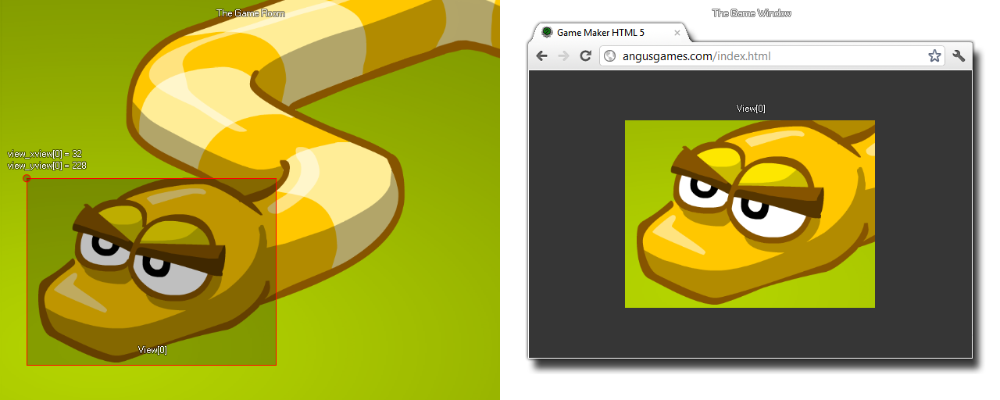

view_xview[0...7]
Returns : Real
This variable can be used to get or to set the x axis position for the view in the room. By changing this value you can set the view to a new position, with (0,0) being the upper left corner of the room, or you can reference this variable to ensure that
an instance is always drawn at a relative position to the view (see example code below). This value can also be negative and so show an area that is outside of the room, in which case the window color will be used (this color can be set
with window_set_color).

draw_text(view_xview[0] + 32, view_yview[0] + 32, "Score : " + string(score));
The above code will draw the score at a position relative to the x and y coordinates of view[0].